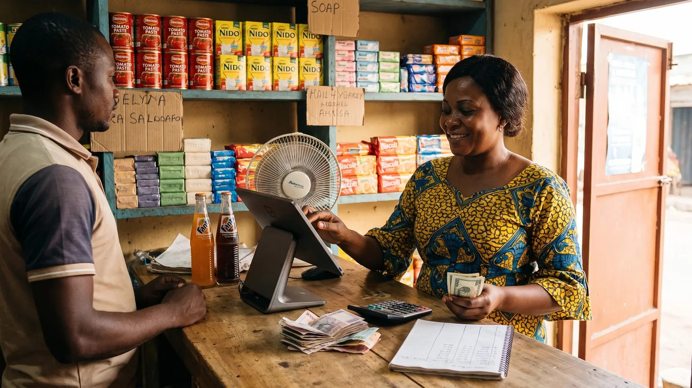

Dollar ou franc congolais à Kinshasa : bien gérer les deux monnaies de votre boutique
Un client vous tend un billet de 20 dollars pour un article à 45 000 francs congolais. Vous n'avez pas la monnaie exacte, le taux d'aujourd'hui n'est pas celui d'hier, et la file derrière lui s'impatiente. Ce n'est pas un incident rare à Kinshasa, c'est le quotidien de la plupart des boutiques, au moment même où l'État resserre les règles sur le dollar cash et où le taux de change peut bouger plusieurs fois dans la même semaine.

Pourquoi le dollar et le franc cohabitent encore dans votre boutique
La RDC est un pays très dollarisé depuis des décennies : le franc congolais (CDF) est la monnaie officielle inscrite dans la Constitution, mais le dollar circule massivement en espèces pour les dépenses courantes, en particulier au-delà de quelques dollars. Beaucoup de commerçants continuent donc, par habitude, à penser leurs prix en dollars et à encaisser en francs, ou l'inverse selon le client.
Pour aller plus loin : avant de signer quoi que ce soit, regardez frais cachés d'un logiciel de caisse, puis logiciels de caisse gratuits. Et si le sujet vous concerne, gérer ses stocks en petit commerce.
Ce n'est pas juste une question de préférence. C'est une méfiance ancienne envers un franc congolais jugé instable, qui pousse une bonne partie de la population et des commerçants à garder le dollar comme repère de valeur. Sauf que les autorités monétaires ont décidé, depuis 2024, de reprendre la main sur ce point, avec des mesures qui touchent directement votre caisse.
Vos prix doivent être en franc congolais, même si vous acceptez le dollar
Depuis un arrêté ministériel signé le 14 juillet 2025 et publié le 7 octobre 2025, l'affichage des prix et la facturation doivent se faire exclusivement en franc congolais sur toute l'étendue du territoire. Le ministre de l'Économie l'a précisé lui-même : il ne s'agit pas d'interdire l'usage des devises, seulement d'imposer que l'étiquette et la facture parlent CDF en premier.
Concrètement, si votre carte de prix ou vos étiquettes sont encore uniquement en dollars, vous êtes en décalage avec la règle en vigueur. Vous pouvez tout à fait continuer à accepter un paiement en dollars selon les règles fixées par la Banque Centrale du Congo, mais l'affichage, lui, doit être en francs.
Quel taux utiliser quand il change presque chaque semaine
C'est la vraie difficulté au quotidien : il n'y a pas un seul taux, il y en a deux. Le taux indicatif, publié par la Banque Centrale du Congo, et le taux du marché parallèle, souvent différent et parfois très variable d'un quartier à l'autre de Kinshasa. En janvier 2026 par exemple, le dollar s'échangeait autour de 2 320 francs sur le marché parallèle, avant de fluctuer, quelques semaines plus tard, entre environ 2 130 francs au taux indicatif et 2 315 francs au parallèle. Ces chiffres ne sont que des exemples pour illustrer l'ampleur des mouvements : ne les recopiez pas tels quels, le taux du jour se vérifie sur bcc.cd, pas dans un article.
Pour votre boutique, la bonne pratique n'est pas de suivre le marché à la minute. C'est de choisir un taux de référence (le taux indicatif du jour, par exemple), de l'appliquer à toutes les ventes de la journée ou de la semaine, et de l'afficher près de la caisse. Cela évite de négocier un taux différent avec chaque client, ce qui use la confiance et fait perdre du temps au comptoir.
Le calendrier des mesures, et ce qui reste incertain
Trois dates comptent pour un commerçant à Kinshasa. Elles ne sortent pas toutes du même texte, et elles n'ont pas toutes la même force aujourd'hui, d'où l'intérêt de les distinguer clairement plutôt que de tout mélanger.
| Date | Mesure | Ce que ça change pour vous |
|---|---|---|
| 3 juin 2024 (appliqué au 1ᵉʳ août 2024) | Circulaire de la BCC : TPE reconfigurés exclusivement en CDF | Votre terminal de carte n'affiche et n'encaisse plus qu'en franc congolais, même pour une carte étrangère |
| 14 juillet 2025 / publié le 7 octobre 2025 | Arrêté ministériel : affichage et facturation en CDF obligatoires | Vos étiquettes et vos factures doivent être en francs congolais ; le paiement en devises reste possible selon les règles de la BCC |
| 9 avril 2027 (annoncé) | Fin annoncée des transactions en espèces en devises étrangères | Plus de paiement cash en dollars ; les opérations en devises devraient passer par un compte bancaire |
D'après les communications de la Banque Centrale du Congo et plusieurs médias économiques congolais et internationaux, vérifiées en août 2026. Ce type de calendrier a déjà été ajusté par le passé en RDC : ne bâtissez pas une décision lourde sur la seule base de cet article, suivez les communications officielles de la BCC au fil des mois.
Pourquoi vos clients n'ont plus la monnaie exacte
C'est une plainte qui revient souvent dans la presse économique congolaise ces derniers mois : le franc s'apprécie ou se déprécie brutalement, mais les prix en boutique ne suivent pas au même rythme, et les petites coupures se raréfient sur le marché. Résultat, un client qui paie avec un gros billet, en dollars ou en francs, tombe sur un commerçant qui ne peut pas rendre la monnaie exacte, et une vente qui traîne ou qui échoue.
La parade la plus simple reste artisanale : gardez volontairement un fond de caisse en petites coupures de CDF, renouvelé chaque jour, plutôt que de découvrir le problème au moment où un client attend devant vous. Certains commerçants refusent purement et simplement les dollars faute de pouvoir rendre la monnaie correctement : c'est une réaction compréhensible, mais qui peut vous faire perdre des clients habitués à payer en dollars si vous ne l'annoncez pas clairement à l'avance.
Airtel Money, Orange Money : attention aux frais qui grimpent
Le mobile money progresse à Kinshasa, mais il a son propre piège : des frais qui ne sont pas toujours ceux annoncés par l'opérateur. Sur le terrain, certains points de service de dépôt ou retrait fractionnent l'opération en deux étapes pour facturer une commission supplémentaire, alors que l'opération de base est censée être gratuite chez l'opérateur.
Ce n'est pas votre logiciel de caisse qui traite ce paiement, c'est l'opérateur télécom. Ce que votre caisse doit faire, en revanche, c'est enregistrer chaque vente réglée par Airtel Money ou Orange Money comme un mode de paiement à part, distinct des espèces, pour que votre comptage du soir reste exact. Et pour vous-même, comparez de temps en temps ce que vous encaissez réellement contre ce que l'opérateur annonce comme frais, pour repérer une éventuelle commission cachée du point de service que vous utilisez.
Ce qu'une caisse doit faire pour vous, concrètement
Avec ce contexte, une caisse qui ne gère qu'une seule devise vous oblige à convertir de tête à chaque vente, avec le risque de vous tromper de quelques francs à chaque transaction, ce qui finit par peser sur un mois entier. Ce qu'il faut chercher, c'est une caisse capable d'afficher le prix en CDF (comme l'exige la réglementation), d'encaisser dans la devise que le client apporte, et de sortir un rapport de caisse cohérent en fin de journée sans calculatrice.
digabloPos propose justement un module dédié pour ça : l'encaissement simultané en deux devises, avec un taux de change configurable et une conversion automatique au moment de la vente. C'est un module payant, facturé environ 10 dollars par mois en plus du plan de base, pas une fonction incluse gratuitement. Le plan gratuit à vie de digabloPos couvre déjà, lui, l'encaissement en espèces, carte et mobile money, jusqu'à deux employés, le mode hors ligne complet et le suivi des lots et dates de péremption : de quoi démarrer et facturer correctement en CDF sans rien payer, puis n'ajouter le module double devise que le jour où vous en avez vraiment besoin.
digabloPos
Pour une boutique à Kinshasa, digabloPos coche les cases qui comptent vraiment dans ce contexte réglementaire. Le plan de base est gratuit à vie, sans engagement ni carte bancaire, et fonctionne en mode hors ligne complet, une nécessité vu la fréquence des coupures réseau. Il gère aussi le crédit client (l'ardoise) pour vos habitués, utile un jour de manque de monnaie. Pour encaisser en deux devises simultanément avec un taux configurable, il faut activer le module double devise, environ 10 $/mois, comme les autres modules avancés (rapports illimités, employés supplémentaires, stock avancé) qui restent payants à la carte. digabloPos n'impose aucune commission ni processeur de paiement propre : vous restez libre d'accepter espèces, carte ou mobile money selon ce que préfère le client.
La check-list à appliquer dès demain matin
- Affichez vos prix en franc congolais en premier, le dollar éventuellement en complément, jamais l'inverse.
- Fixez un taux de conversion pour la journée (ou la semaine) et affichez-le près de la caisse, pour ne pas le renégocier avec chaque client.
- Gardez un fond de caisse en petites coupures de CDF, renouvelé chaque jour, pour ne pas perdre une vente faute de rendre la monnaie.
- Enregistrez chaque vente avec la devise réellement reçue, pas seulement son équivalent en CDF, pour retrouver vos vrais totaux en fin de mois.
- Vérifiez que votre terminal de carte encaisse bien en franc congolais, comme l'exige la BCC depuis août 2024, et signalez tout écart à votre banque.
- Suivez les communications officielles de la Banque Centrale du Congo, pas seulement les rumeurs de marché, avant de changer votre organisation en profondeur.
Prêt à facturer proprement en franc congolais ?
Installez une caisse gratuite qui affiche vos prix en CDF, encaisse espèces, carte et mobile money, et fonctionne même sans réseau.
Créer ma caisse gratuiteQuestions fréquentes
Dois-je afficher mes prix en dollars ou en franc congolais ?
En franc congolais, obligatoirement. Un arrêté du ministère de l'Économie signé le 14 juillet 2025 et publié le 7 octobre 2025 impose l'affichage et la facturation en CDF sur tout le territoire. Vous pouvez continuer à accepter des paiements en devises selon les règles fixées par la Banque Centrale du Congo, mais l'étiquette et la facture doivent parler franc congolais en premier.
Le taux du dollar change presque chaque semaine, lequel dois-je utiliser ?
Il existe deux taux à Kinshasa, le taux indicatif publié par la Banque Centrale du Congo et le taux du marché parallèle, souvent différent. Le plus simple pour une boutique est de choisir un taux, par exemple le taux indicatif du jour consultable sur bcc.cd, de l'appliquer à toutes les ventes de la journée, et de ne pas le renégocier avec chaque client.
Est-ce vrai qu'on ne pourra plus payer en dollars en espèces à partir de 2027 ?
C'est ce qu'a annoncé le gouverneur de la Banque Centrale du Congo : à partir du 9 avril 2027, plus aucune transaction en espèces en devise étrangère ne serait autorisée, les opérations en devises devant alors passer par un compte bancaire. Ce type de mesure a déjà connu des ajustements de calendrier en RDC par le passé, donc suivez les communications officielles de la BCC plutôt que de tout changer sur la seule base de cette annonce.
Mon terminal de paiement (TPE) doit-il encore accepter les dollars ?
Non, en principe. Une circulaire de la BCC datée du 3 juin 2024 a demandé aux établissements de crédit et sociétés financières de configurer leurs terminaux de paiement électronique exclusivement en franc congolais à partir du 1ᵉʳ août 2024. Si le vôtre affiche encore le dollar, posez la question à votre banque ou à votre prestataire.
Pourquoi certains clients n'ont plus la monnaie exacte à me rendre ?
C'est souvent un effet direct des à-coups du taux de change : quand le franc s'apprécie ou se déprécie vite, les petites coupures manquent sur le marché et les prix affichés ne suivent pas toujours au même rythme. Gardez un fond de caisse en petites coupures de CDF pour ne pas perdre une vente faute de pouvoir rendre la monnaie.
Une caisse peut-elle gérer les deux devises toute seule ?
Certaines le peuvent, mais vérifiez toujours si c'est inclus ou payant avant de choisir. Chez digabloPos par exemple, le plan de base gratuit encaisse déjà en espèces, carte et mobile money, et l'encaissement simultané en deux devises avec taux de change configurable est un module séparé, facturé environ 10 dollars par mois.
Envie de tester sans rien dépenser ?
Le plan de base est gratuit à vie et facture déjà correctement en franc congolais. Le module double devise reste optionnel, à activer seulement si vous en avez besoin.
Essayer digabloPos gratuitementSources officielles
Les règles et les taux changent vite. Voici où vérifier vous-même ce qui est écrit plus haut.
- Banque Centrale du Congo, cours de change : le taux indicatif officiel, à consulter le jour même plutôt que de retenir un chiffre daté.
- UNE.cd, affichage des prix en CDF obligatoire : le détail de l'arrêté ministériel du 14 juillet 2025.
- Dépêche AFP, fin du dollar cash en RDC : l'annonce de la Banque Centrale du Congo sur la restriction des espèces en devises à partir de 2027.